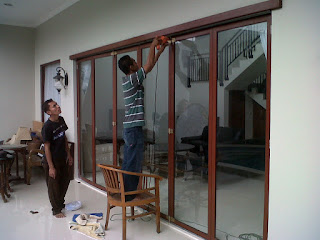
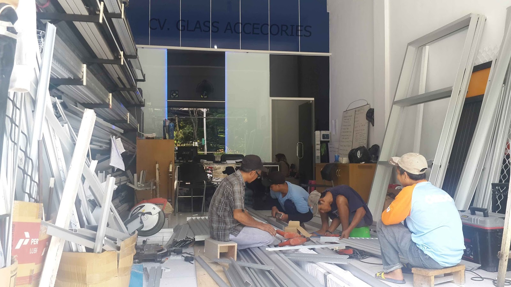

Kaca ialah salah satu unsur yang cukup penting pada sebuah bangunan baik untuk rumah tinggal, pertokoan, gedung bertingkat maupun multi use building. Fungsi utama kaca yakni sebagai pencahayaan alami dan juga sebagai komponen dari keindahan bangunan.
Sekarang sudah hadir beragam maca jenis kaca yang dapat ditemui, setiap kaca memiliki fungsinya masing-masing. Dapat untuk system keamanan, keindahan dan masih banyak yang bisa di temukan dari pemasangan kaca. Ragam kaca-kaca tersebut diantaranya yakni kaca tempered, kanopi kaca, kaca frameless, kaca cermin, railing kaca dan masih banyak macam kaca lainnya yang dapat anda dapatakan dan anda aplikasikan pada bangunan. Berikut ini sedikit penjelasan mengenai berjenis-jenis tipe kaca dan fungsi kaca dan juga parket lantai kayu jati yang dapat anda dapatkan.
Distributor & Supplier Pintu Kaca di Samarinda

Sekarang telah tersedia pelbagai tipe dan bermacam teladan pintu kaca Samarinda yang sedang menjadi tren dikala ini. Tersedia juga alumunium dan kayu kalau Anda mau mempunyai pintu kaca Samarinda dengan frame. Tak Anda berharap mempunyai pintu kaca Samarinda lipat yang terdiri dari beberapa pigura. Anda tinggal tentukan saja figur pintu kaca Samarinda seperti apa yang mau Anda miliki. Dalam hal ini, terdapat sebagian tipe kaca dengan kualitas yang terbaik.
Dis.or.id menyediakan pintu kaca Samarinda dengan berjenis-jenis macam yang bisa anda pilih layak kebutuhan. Jikalau ahli yang benar-benar profesional sehingga sungguh-sungguh siap untuk mewujudkan pintu kaca Samarinda seperti apa yang berkeinginan Anda miliki.
Terdapat juga alternatif lain berapa kaca non-tempered yang harganya relatif lebih murah. Dis.or.id mempunyai energi yang sudah sangat profesional di bidang ini.
Info Pemesanan Selengkapnya
Google Maps: https://www.google.com/maps/d/u/0/viewer?mid=1Oev1fV01o8gQSuJ72jMMShl0CllevHqY&ll=-7.27380280025364%2C112.65243155000007&z=18
Event: https://www.facebook.com/events/174522916469442/
Portfolio Produk: https://www.facebook.com/1681607345472479/photos/?tab=album&album_id=1712632585703288
Jasa Pemasangan Railing Kaca

Railing kaca kini semakin banyak opsinya. Tidak konsep rumah modern dikala ini, kebanyakan rumah dibangun dengan desain minimalis. Lupakan bahan seperti kayu. Bahkan aksesoris seperti pada pegangan tangga malah tak terbuat dari bahan kayu lagi namun kaca dan aluminum. Mereka tidak lagi membikin pagar tangga atau balkon dari kayu. Maka dari itu, para produsen berupaya untuk menciptakan railing yang terbuat dari kaca dengan figur yang berbeda-beda. Pun juga bahan yang dipakai.
Ada banyak opsi jenis kaca yang bisa dipakai. Anda dapat pertimbangkan untuk mengaplikasikan kaca tempered. Kaca ini benar-benar kuat dan juga aman. Dikatakan sungguh-sungguh aman lantaran kaca tempered tidak menimbulkan pecahan yang runcing saat tiba-tiba kaca pecah entah itu akibat kecelakaan atau bencana seperti gempa. Pecahannya sungguh-sungguh kecil dan lembut sehingga tidak akan melukai siapapun yang terkena pecahan. Aluminum biasanya yang diaplikasikan sebagai railing atau pigura. Jikalau memberikan kesan minimalis pada interior rumah, ini juga membuat rumah Anda nampak lebih nyaman untuk dibuat daerah tinggal.
ukuran dan ketebalan railing kaca sudah tersedia. Tentu dengan harga yang murah melainkan konsisten berkelas.
Distributor, Supplier & Jasa Pasang Kanopi Kaca

Diantaraya ialah kaca tempered 8 mm, kaca tempered 10 mm clear, kaca tempered 12 mm clear, kaca laminated 12 mm clear, kaca laminated 5 mm + 5 mm clear non tempered kaca, kaca laminated 5 mm + 5 mm tempered clear dan masih banyak lagi. Harga dari setiap kaca yang ditawarkan cukup beraneka tergantung kaca yang nanti akan diaplikasikan. Jadi sudah tak heran lagi seluruh orang berkeinginan mencari harga yang sangat kompetitif untuk menyesuaikan budget atau anggaran mereka masing – masing untuk membikin produk canopy kaca. Ada banyak pilihan varian desain. Apabila tembus pandang, kaca menyerap sinar yang masuk sehingga semakin tebal kaca maka semakin sedikit cahaya yang dapat melewatinya, karenanya sifat transparannya makin berkurang.|Di samping pintu kaca shower akan membuat kamar mandi kecil menonjol lebih besar. Pada atap akrilik, penyerapan sinar yang terjadi demikian kecil sehingga sedangkan ketebalannya bertambah, sifat transparannya tidak banyak berubah.
Tidak anda beratensi untuk memasang kaca kanopi pada rumah, gedung ataupun kantor, anda bisa langsung mengunjungi dis.or.id. Terdapat banyak kanopi dengan berbagai ukuran dan ketebalan yang dapat anda pilih sesuai dengan yang anda butuhkan. Anda juga dapat memenfaatkan jasa pemasangan atap kanopi kaca dengan semua variasi kaca yang anda butuhkan yang sesuai dengan kriteria atap kanopi. Kalau fungsi utama kanopi sebagai pelindung untuk bangunan tersebut, pemasangan kanopi kaca juga dapat membikin bangunan menjadi nampak lebih menawan dan menarik, apalagi menerapkan konsep yang sama dengan konsep rumah minimalis. Setelah kaca untuk atap kanopi cukup digemari. Tidak anda sedang mencari kanopi kaca, anda bisa seketika mengunjungi dis.or.id. Disana anda akan memperoleh kanopi kaca yang layak dengan pelbagai ketebalan dan harga yang cukup relatif murah.
Distributor & Supplier Kaca Shower
Bila akan memberikan kesan lapang saat berada di kamar mandi, mandi dengan shower akan memberikan kesegaran tersendiri dibanding kamar mandi dengan bak mandi. Pengerjaan ini memang desain shower berbahan kaca memang lebih banyak digunakan ketimbang desain shower berbahan tirai. Penyekat ini akan memisahkan antara daerah basah yang diaplikasikan untuk mandi atau meletakan shower dan tempat lain yang merupakan area kering.
Dis.or.id menyediakan kaca shower dengan kualitas premium sehingga saat dipasang akan segera terlihat mewah.
Distributor, Supplier & Jasa Pasang Kanopi Kaca
Salah satu jenis kanopi kaca yang dapat anda aplikasikan pada atap yaitu atap kaca skylight yang yaitu kanopi kaca dalam format jendela horizontal atau kubah yang biasanya ditempatkan di atap bangunan yang mempunyai maksud untuk pencahayaan ruangan. Anda dapat memilih kanopi kaca yang cocok dengan keperluan dan harapan anda. Dan sensasi mandi menjadi lebih asik untuk dinikmati. Bila tembus pandang, kaca meresap cahaya yang masuk sehingga semakin tebal kaca karenanya kian sedikit sinar yang bisa melewatinya, karenanya sifat transparannya makin berkurang.|Di samping pintu kaca shower akan membuat kamar mandi kecil menonjol lebih besar. Pada atap akrilik, absorpsi sinar yang terjadi demikian kecil sehingga sedangkan ketebalannya bertambah, sifat transparannya tak banyak berubah. Atap akrilik atau dapat juga disebut atap kaca acrylic ini banyak ditemukan di sebuah bangunan rumah, seperti ruko, apartemen, resto, mall, sampai bangunan gedung.
Tak anda saat ini sedang memerlukan kanopi kaca, anda dapat seketika mengunjungi dis.or.id. Harga untuk tiap pemasangan pun bermacam-macam pantas dengan kebutuhan anda. Apabila fungsi utama kanopi sebagai pelindung untuk bangunan tersebut, pemasangan kanopi kaca juga bisa membuat bangunan menjadi terlihat lebih menawan dan menarik, apalagi memakai konsep yang sama dengan konsep rumah minimalis. Sesudah kaca untuk atap kanopi cukup digemari. Tak anda sedang mencari kanopi kaca, anda dapat langsung mengunjungi dis.or.id. Disana anda akan mendapat kanopi kaca yang cocok dengan pelbagai ketebalan dan harga yang cukup relatif murah.
Jasa Maintenance Kaca

Jasa maintenance kaca merupakan perusahaan yang akan membantu supaya gedung perkantoran Anda kelihatan seperti baru. Salah satunya pelayanan berupa pembersihan gedung yang terbuat dari kaca. Kaca menjadi kusam. Peralatan macam kotoran seperti debu serta sinar sang surya dan juga hujan acap kali membuat kaca gedung menjadi kusan dan tidak menarik. Membersihkan komponen kaca gedung Anda yang mungkin rusak, pecah, atau mengalami situasi sulit lainnya.
Lebih dari itu, Apabila spesialis yang dimilik oleh dis.or.id juga dapat membenarkan kaca yang rusak. Dis.or.id menyiapkan segala jenis kaca pantas keperluan dikala ini.
Dis.or.id ialah perusahaan jasa di bidang maintenance kaca gedung dengan memberikan beberapa pelayanan. Salah satunya pelayanan berupa pembersihan kaca dengan memakai alat pembersih yang bisa membuat kaca gedung Anda nampak bersih seperti sediakala. Tersedia alat pensupport supaya semua sisi gedung yang terbuat dari kaca dapat dipastikan semua sisi gedung bisa di bersihkan. Dis.or.id mempunyai segala energi ahli yang di rekrut cuma mereka yang profesional yang tahu persis bagaimana metode mengaplikasikan alat dan bagaimana membersihkan kaca gedung bertingkat. Oleh sebab itu, dis.or.id cuma memilih orang-orang yang amat profesional dan telah memiliki pengalaman dalam hal maintenance kaca. Dengan sudah memberikan training terhadap energi pakar sehingga mereka telah bisa mengerjakan pekerjaan mereka dengan amat baik. Selain cuma dalam hal membersihkan kaca, mereka juga sanggup mengerjakan pembenaran serta penggantian kaca yang mengalami kerusakan.
Jasa Pemasangan Kaca Tempered

Selain ini disebabkan bahan ini bukan tipe kaca biasa. Sementara itu, untuk rumah hunian, komponen dari rumah seperti kamar mandi serta kanopi lazimnya terbuat dari kaca tempered. Selain ini tak lain sebab semakin banyak orang yang memahami kwalitas serta keunggulan dari kaca tempered ini.
Dengan mangunjungi dis.or.id, anda dapat menerima dan memanfaatkan jasa kaca tempered yang cocok dengan keinginan anda. Harga untuk tiap-tiap pemasangan dijamin termurah dan hasil pengerjaan yang pantas dengan keinginan anda. Bukan sembarang alat yang diterapkan untuk memotong kaca tempered pantas dengan keperluan. Seandainya aman kaca tempered juga kapabel memberikan kesan keindahan yang amat bagus diperbandingkan dengan kata macam lainnya.
Jual Kaca Cermin
Kaca cermin tidak hanya berfungsi untuk berkaca saja melainkan juga sebagai pemanis ruangan. Kaca cermin dilapisi dengan pelapis transparan tipis dan oksida logam sebagai lapisan pelapis. Ada banyak sekali desain cermin yang dapat Anda pilih. Untuk bangunan bertingakat, lebih-lebih dipakai pada macam dinding kaca. Salah satunya, kaca cermin ini bersifat refletif. Jadi, Anda mempunyai banyak alternatif untuk memutuskan cermin yang Anda pilih benar-benar bisa mempercantik interior rumah Anda. Tidak saja, memang kesan minimalis terlihat dari cermin dengan bentuk persegi atau persegi panjang. Sementara itu, saat diperhatikan dari luar, kaca ini reflektif.
Dis.or.id yaitu penyedia bermacam-macam ukuran kaca cermin yang dapat anda aplikasikan ke gedung, kantor ataupun rumah anda. Dan bahan yang diterapkan untuk membikin frame pun berbeda-beda. Akan lebih menarik lagi bila Anda menerapkan kaca cermin ini sebagai bahan utama furniture. Tersedia kaca cermin dengan beraneka ukuran yang dapat anda pesan di dis.or.id. Namun kunjungi dis.or.id untuk mendapatkan penawaran menarik.
Distributor & Supplier Pintu Lipat Kaca
Bukan hanya bagian depan saja yang dipasang pintu kaca lipat tapi bagian dalam juga bisa. Lalu, berapakah harganya? Anda mungkin menyangka bahwasannya kaca ini ditawarkan dengan harga selangit. Memang diperbandingkan dengan variasi kaca lainnya, harganya lebih mahal. Akan tetapi, terpautnya tak terlalu signifikan.
Banyak hal yang sudah Anda kenal tentang pintu kaca lipat tempered. Tetapi bukan itu saja, aksesoris komplemen juga berimbas. Anda wajib menentukan aksesoris yang melengkapi pintu kaca lipat mempunyai kualitas terbaik, seperti figur hinges. Jadi, bukan cuma pintu saja yang berupa kaca, tapi juga semua sekat ruangan.
Jasa Pemasangan Kubikel Toilet

Dahulu, kamar mandi hanya disekat oleh penyekat yang berbahan kayu, jarang sekali yang memakai bahan lain. Melainkan, seiiring berkembangnya desain interior, kamar mandi bahkan dapat di sekat dengan penyekat dari kaca.
Rumah sakit dan perkantoran. Banyak profit yang dapat di temukan dengan menggunakan kubikel kamar mandi diantaranya adala efisiensi, dimana dalam satu ruangan bisa menampung dan membuat banyak kamar mandi. Disana terdapat kubikel kaca dengan berbagai ukuran dan ketebalan dengan harga yang cukup terjagkau di bandingkan dengan daerah lainnya. Kaca sebagai penyekat dalam kamar mandi awam disebut kaca shower. Kaca shower banyak digunakna sebab memberikan kesan mewah.
Harga yang ditawarkan bahkan cukup relatif murah.
Melainkan penggunaan kaca di kamar mandi bisa jadi keadaan sulit saat Anda meletakkannya dengan salah. Bila anda ketika ini sedang membutuhkan kaca shower untuk kamar mandi, seketika saja kunjungi dis.or.id untuk melakukakn pemesanan ataupun menanyakan detil harga dari kaca shower.
Distributor & Supplier Partisi Kaca
Partisi kaca sudah diterapkan dimana saja. Tidak cuma sebagai pembatas di mall, hotel, atau kantor-kantor saja, namun juga diterapkan sebagai sekat ruangan di rumah hunian. Telah banyak properti yang mengaplikasikan bahan berupa kaca sebagai partisi. Anda lihat di sentra perbelanjaan modern, hotel, dan juga perkantoran. Kecuali itu, progresnya juga tidak memakan waktu sehingga Anda bisa menghembat tarif pemasangan. Alasan yang kedua, partisi kaca ini ruangan kelihatan sangat minimalis. Ini sesuai dengan konsep atau desain properti saat ini. cuma rumah, perkantoran juga dihasilkan sedemikian rupa agar sangat minimalis dan menarik. Alasan yang ketiga, partisi kaca ini tidak menghabiskan space. Mutu, untuk space yang tidak begitu luas, Anda bisa menyekat menjadi sebagian ruangan dengan partisi ini tanpa merasa ruangan menjadi benar-benar sempit. Anda memakai partisi kaca ini sebagai penyekat sebagian ruangan seperti kamar mandi dalam, taman dalam ruangan, ruangan bermain di dalam rumah, dan lain sebagainya. Anda mesti tahu ada kaca transparan, semi transparan dan kaca yang sama sekali tak transparan yang sering disebut dengan kaca cermin. Selain itu, figur partisi kaca ada yang frameless (tanpa pigura) dan juga ada yang mengaplikasikan frame. Seandainya anda untuk memasang dinding kaca penyekat, dis.or.id menyediakan jasa pemasangan dinding kaca penyekat untuk kamar mandi rumah anda.